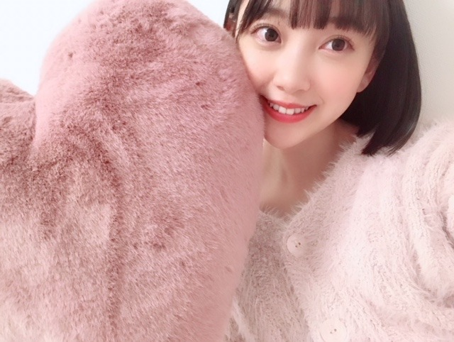
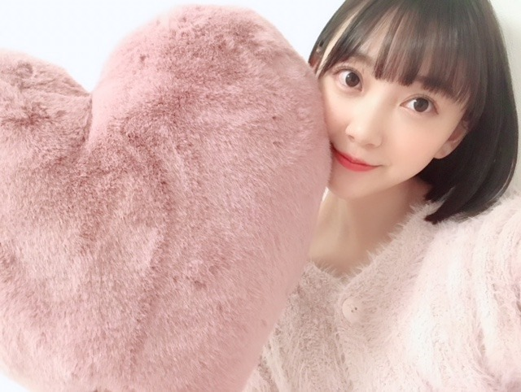
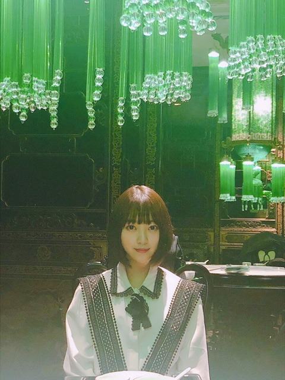

2018/1203Monくじを何気なく引いたらかわいいスノードームが当たりましたるんるん
12月になりましたね！
早く雪降らんかな〜☺︎
クリスマスソングを聴くだけで
気分がるんるんします


私の部屋のベッドにある
お気に入りクッション☺︎
肌触りのいいものがすきです！
そして上海での初ライブ
皆さん温かくて本当に楽しかったです
また海外でライブができるように頑張ります

飲茶ランチをメンバー数人でしたときに
ひなちまが撮ってくれたお気に入り写真！


楽しかった〜
謝謝☺︎☺︎
ではまた！
2018/12/03 20:36
コメント(421)
未央ちゃん上海ライブお疲れ様でーす。上海何が1番美味しかったですか〜？
ほりっぴ～、ナンチです♪
わかの卒業セレモニーから帰宅中
余韻に浸ってます
ほりっぴ～、ウィッグつけてたんだね
ショートもロングもいい
優柔不断かな
わかへのコメントもとっても素敵でしたよ
おつかれさまでした
わかの卒業セレモニーから帰宅中
余韻に浸ってます
ほりっぴ～、ウィッグつけてたんだね
ショートもロングもいい
優柔不断かな
わかへのコメントもとっても素敵でしたよ
おつかれさまでした
上海や若様の卒業セレモニー
お疲れ様です！
1期生がいっぱい卒業して大変な時期ですが、
体に気をつけてください！
控えめに言って好きですw
お疲れ様です！
1期生がいっぱい卒業して大変な時期ですが、
体に気をつけてください！
控えめに言って好きですw
ブログ更新ありがとうございます！
上海ライブお疲れ様でした！
楽しかったですか？
体調に気をつけてくださいね。
いつも応援しています！
上海ライブお疲れ様でした！
楽しかったですか？
体調に気をつけてくださいね。
いつも応援しています！
謝謝❤️
タイトル可愛すぎ笑
ブログ更新ありがとう〜
上海公演お疲れ様！
料理美味しそうw
コメント返しはもう終わっちゃったのかな？…
そして、未央奈のハートのクッションってもしかして光ったりする？
上海公演お疲れ様！
料理美味しそうw
コメント返しはもう終わっちゃったのかな？…
そして、未央奈のハートのクッションってもしかして光ったりする？
いつもブログありがとう！
上海公演お疲れ様でした。
12月は街中でもジングルベルとか聴くとウキウキしますね！
先日、映画の「ボヘミアン・ラプソディ」を観てきて、頭の中はずっとQueenの曲が流れてます笑
ぜひ、未央奈にも観て欲しい！笑
週末から寒くなるみたいなので、体調には気をつけてくださいね！
私も未央奈のクッションとの写メで癒されました笑
これからも応援し続けますね！
上海公演お疲れ様でした。
12月は街中でもジングルベルとか聴くとウキウキしますね！
先日、映画の「ボヘミアン・ラプソディ」を観てきて、頭の中はずっとQueenの曲が流れてます笑
ぜひ、未央奈にも観て欲しい！笑
週末から寒くなるみたいなので、体調には気をつけてくださいね！
私も未央奈のクッションとの写メで癒されました笑
これからも応援し続けますね！
堀ちゃん
今日もお疲れ様です
755にもあったハートクッションの堀ちゃんの写真ですがめちゃめちゃ可愛いかったので、ブログでも見れて嬉しい限りです
（クッション＜堀ちゃん）
上海ライブもお疲れ様でした（国から応援してた）
国内はもちろん、海外でも乃木坂が普遍的な存在になってきてると思うのですごいです
来年も台北でライブという事で頑張って下さい（国から応援してるよ）
15日は握手会なので、楽しみにしてます（気付けば2週間切ってた）
昨日や今日は割と寒くないですが、週末は寒いみたいなので体調にはお気をつけ下さい
ありがとうこざいました
今日もお疲れ様です
755にもあったハートクッションの堀ちゃんの写真ですがめちゃめちゃ可愛いかったので、ブログでも見れて嬉しい限りです
（クッション＜堀ちゃん）
上海ライブもお疲れ様でした（国から応援してた）
国内はもちろん、海外でも乃木坂が普遍的な存在になってきてると思うのですごいです
来年も台北でライブという事で頑張って下さい（国から応援してるよ）
15日は握手会なので、楽しみにしてます（気付けば2週間切ってた）
昨日や今日は割と寒くないですが、週末は寒いみたいなので体調にはお気をつけ下さい
ありがとうこざいました
こんにちは‼︎
ブログ更新、ありがとうございます♪
12月に入って、クリスマスツリーが飾られたり、街路樹がライトアップされたり。
街も少しずつ年末の準備を進めている感じがしますね♪
たしかに、年末の雪ってテンション高まりますよね…‼︎
でも、今日は雪どころか、初秋ぐらいの暖かさ(笑)。
なかなか理想どおりにはいかないですね〜
素敵な写真の掲載もありがとうございます‼︎
最初の2つは、とにかくピンク満載で癒しの雰囲気♪
クッションも部屋着も、肌触りが良さそう‼︎
上海での飲茶ランチの写真は、なんか幻想的。
メンバー的にも、実年齢の割には色っぽさも併せ持った方々が揃っていて、お店の雰囲気ととても良く合ってます♪
今日は佑美ちゃんの卒業セレモニーでしたね。
いい思い出を作ることはできましたか？
1つ1つの記憶が、きっと大切な宝物になります♪
また、新たな一歩を踏み出しましょう…‼︎
ではでは、また。
明日も未央奈にとっていい1日になりますように♪
ブログ更新、ありがとうございます♪
12月に入って、クリスマスツリーが飾られたり、街路樹がライトアップされたり。
街も少しずつ年末の準備を進めている感じがしますね♪
たしかに、年末の雪ってテンション高まりますよね…‼︎
でも、今日は雪どころか、初秋ぐらいの暖かさ(笑)。
なかなか理想どおりにはいかないですね〜
素敵な写真の掲載もありがとうございます‼︎
最初の2つは、とにかくピンク満載で癒しの雰囲気♪
クッションも部屋着も、肌触りが良さそう‼︎
上海での飲茶ランチの写真は、なんか幻想的。
メンバー的にも、実年齢の割には色っぽさも併せ持った方々が揃っていて、お店の雰囲気ととても良く合ってます♪
今日は佑美ちゃんの卒業セレモニーでしたね。
いい思い出を作ることはできましたか？
1つ1つの記憶が、きっと大切な宝物になります♪
また、新たな一歩を踏み出しましょう…‼︎
ではでは、また。
明日も未央奈にとっていい1日になりますように♪
お互いに


最高!
あなたとコンビニファミリーマートン！
最近のお気に入りの音楽、教えて下さい！
じゃ、またね！！
最近のお気に入りの音楽、教えて下さい！
じゃ、またね！！
タイトル。笑
おめでとるんるん♪
あ、どうもこんばんは。未央奈！
ほんと。もう12月だね！はやい！
雪楽しみだねー。そだねー。
クリスマスソング！最近は毎日聴いてます♪
かわいい。。
ハート型のかわいいクッションだね！♡
夜遅くまでお仕事お疲れ様。
未央奈の部屋にはモコモコしたものたくさんありそう。笑
上海ライブおつかれ！！
よかった。よかった。(^-^)
未央奈のかわいさを世界に届けたれ〜！✨
店内と服装とのフィット感すごいね！笑
おしゃれな照明〜〜
755のアイコンにするぐらいお気に入りだもんね。笑
楽しそう！！
これからも笑顔をいっぱい見せてね！☺︎☺︎
そういえば今日こっちは運動のために水泳をしてきたんだけど、結構泳いで痩せたわぁ。って思って帰ったら夕飯がおでんでいっぱい食べちゃって、、カロリープラマイ0じゃ、、
っていう日でした！
人生っておもろいよね！笑
ではでは！
おやすみおな〜〜♪
おめでとるんるん♪
あ、どうもこんばんは。未央奈！
ほんと。もう12月だね！はやい！
雪楽しみだねー。そだねー。
クリスマスソング！最近は毎日聴いてます♪
かわいい。。
ハート型のかわいいクッションだね！♡
夜遅くまでお仕事お疲れ様。
未央奈の部屋にはモコモコしたものたくさんありそう。笑
上海ライブおつかれ！！
よかった。よかった。(^-^)
未央奈のかわいさを世界に届けたれ〜！✨
店内と服装とのフィット感すごいね！笑
おしゃれな照明〜〜
755のアイコンにするぐらいお気に入りだもんね。笑
楽しそう！！
これからも笑顔をいっぱい見せてね！☺︎☺︎
そういえば今日こっちは運動のために水泳をしてきたんだけど、結構泳いで痩せたわぁ。って思って帰ったら夕飯がおでんでいっぱい食べちゃって、、カロリープラマイ0じゃ、、
っていう日でした！
人生っておもろいよね！笑
ではでは！
おやすみおな〜〜♪
ライブおつかれさまでした！
もうすぐクリスマス！！
もうすぐクリスマス！！
くじを何気なく引いたら
可愛いスノードーム当たったんだ？
それは良かったでスノ～～♪…
あれ､雪降ってます？とてもサムい
可愛いスノードーム当たったんだ？
それは良かったでスノ～～♪…
あれ､雪降ってます？とてもサムい
写真集発売から一年が過ぎたんですね。
新刊で二冊買ったのは未央奈が初めてでした。
今までのお礼の意味で買ったんですが、
ランク入りに貢献出来てうれしいです。
新刊で二冊買ったのは未央奈が初めてでした。
今までのお礼の意味で買ったんですが、
ランク入りに貢献出来てうれしいです。
未央奈ちゃん、ひろっしーです！コメント投稿542回目です！
前回はブログ「らしさ。」にモバメの感想を書きました！
時間→「No.385 2018年11月30日 00:43」
ブログ更新ありがとうございます！
可愛いスノードーム当たって良かったですね！
どんなんやろ？また写真載せてください！
今回の写真ですが、いきなり可愛すぎるって！
堀未央奈×ハート×ピンク=最強ですね(照)
クッションの肌触りも気持ち良さそうですし、ただただ可愛い！凄く可愛い！マジで可愛い！めっちゃ嬉しいです！ありがとうございます！女に生まれ変わったら未央奈ちゃんが良いな！ちなみに男なら嵐の大野くん！この2択です！
いやぁ、早いもので12月になりましたね！
雪は綺麗だけど、寒いのは嫌だな～(笑)
クリスマスソングかぁ・・・嵐だったら～(笑)
・WISH・イチオクノホシ・二人の記念日
・Snowflake・冬を抱きしめて・Dear Snow
・あの日のメリークリスマス・Pray
・Winter days・白が舞う・White On White
・ニノのソロ曲「メリークリスマス」
こんな感じです！でも、僕の場合その時の気分次第で聴きたい曲が変わるので、季節はあまり関係無いですね(笑) いつ聴いても嵐や乃木坂の曲は僕の心を支えてくれます！ありがたや～！
あと、いつか乃木坂からもクリスマスソングを発売して欲しいです！
上海ライブお疲れ様でした！
お気に入り写真、緑色と暗めの店内が相まって幻想的で凄く綺麗でした！
めっちゃ笑ってて楽しかったのが伝わります！
ここまで読んで頂きありがとうございました！
毎日お仕事お疲れ様です！体調にはくれぐれも気を付けて頑張ってくださいね！
おやすみおな～！
前回はブログ「らしさ。」にモバメの感想を書きました！
時間→「No.385 2018年11月30日 00:43」
ブログ更新ありがとうございます！
可愛いスノードーム当たって良かったですね！
どんなんやろ？また写真載せてください！
今回の写真ですが、いきなり可愛すぎるって！
堀未央奈×ハート×ピンク=最強ですね(照)
クッションの肌触りも気持ち良さそうですし、ただただ可愛い！凄く可愛い！マジで可愛い！めっちゃ嬉しいです！ありがとうございます！女に生まれ変わったら未央奈ちゃんが良いな！ちなみに男なら嵐の大野くん！この2択です！
いやぁ、早いもので12月になりましたね！
雪は綺麗だけど、寒いのは嫌だな～(笑)
クリスマスソングかぁ・・・嵐だったら～(笑)
・WISH・イチオクノホシ・二人の記念日
・Snowflake・冬を抱きしめて・Dear Snow
・あの日のメリークリスマス・Pray
・Winter days・白が舞う・White On White
・ニノのソロ曲「メリークリスマス」
こんな感じです！でも、僕の場合その時の気分次第で聴きたい曲が変わるので、季節はあまり関係無いですね(笑) いつ聴いても嵐や乃木坂の曲は僕の心を支えてくれます！ありがたや～！
あと、いつか乃木坂からもクリスマスソングを発売して欲しいです！
上海ライブお疲れ様でした！
お気に入り写真、緑色と暗めの店内が相まって幻想的で凄く綺麗でした！
めっちゃ笑ってて楽しかったのが伝わります！
ここまで読んで頂きありがとうございました！
毎日お仕事お疲れ様です！体調にはくれぐれも気を付けて頑張ってくださいね！
おやすみおな～！
クリスマスソングを聞くところや雪を待ってることとか、堀さんの感性って、本当に凄いなと思いました。ひなちまさんが撮った写真は、キリっとされてて、カッコイイし知的に見えます。やっぱり堀さんは女神です。堀さんに関わる人は豊で、健康で美しくなります。
未央奈…大好き！
ずっと応援してます╰(*´︶`*)╯♡推しメンです！
クリスマスの時期にはクリスマスソング聞くだけで切なくもなんかウキウキするよね(*´∀｀*)
クリスマスと言うか12月に是非聞いて欲しい曲があります…
Taylor Swiftの『Back to December 』です。
曲調も歌詞も冬らしい切ない感じになってるよ！
12月は自分の誕生月です！『Back to December 』の歌詞のようにあの頃の12月に戻りたいって思う時が今でもあります。
今は家庭も持って幸せなんですけどね…たまに戻りたいっ思うステキな12月があったんです。
未央奈にとってステキな12月でありますように٩(๑❛ᴗ❛๑)۶
ずっと応援してます╰(*´︶`*)╯♡推しメンです！
クリスマスの時期にはクリスマスソング聞くだけで切なくもなんかウキウキするよね(*´∀｀*)
クリスマスと言うか12月に是非聞いて欲しい曲があります…
Taylor Swiftの『Back to December 』です。
曲調も歌詞も冬らしい切ない感じになってるよ！
12月は自分の誕生月です！『Back to December 』の歌詞のようにあの頃の12月に戻りたいって思う時が今でもあります。
今は家庭も持って幸せなんですけどね…たまに戻りたいっ思うステキな12月があったんです。
未央奈にとってステキな12月でありますように٩(๑❛ᴗ❛๑)۶
未央奈ちゃん。ブログ更新ありがとう！こちらは、まだまだ雪ふりません。いま、どちらのお店に入ってもクリスマス一色ですね。
おはよう～(^-^)
飲茶ランチの写真可愛いね(*^^*)
飲茶ランチの写真可愛いね(*^^*)
ブログありがとう
上海ライブお疲れ様でした！
今日のレコメン楽しみにしてます。
なかなか本格的に寒くなってこないけど、体調はどうですか？
自分は寝不足なので気をつけます。
でわ。
上海ライブお疲れ様でした！
今日のレコメン楽しみにしてます。
なかなか本格的に寒くなってこないけど、体調はどうですか？
自分は寝不足なので気をつけます。
でわ。
未央奈ちゃん、おはよう。
上海ライブから若月卒業セレモニーとお疲れ様でした。休むまもなく年末の歌番組や握手会だね、まずは良い体調で過ごしてくださいね。
飲茶の服装、上海にマッチしているような、とっても似合っていてカワイイです。中国のファンも増えたのかな？
年内は歌番組などテレビで未央奈ちゃんをみて、京セラドームでは未央奈ちゃんとアイコンタクトしたいです。
乃木坂46と頑張ってるcuteでsmartな未央奈ちゃんを応援しています。
上海ライブから若月卒業セレモニーとお疲れ様でした。休むまもなく年末の歌番組や握手会だね、まずは良い体調で過ごしてくださいね。
飲茶の服装、上海にマッチしているような、とっても似合っていてカワイイです。中国のファンも増えたのかな？
年内は歌番組などテレビで未央奈ちゃんをみて、京セラドームでは未央奈ちゃんとアイコンタクトしたいです。
乃木坂46と頑張ってるcuteでsmartな未央奈ちゃんを応援しています。
笑う時に
口元を手で隠すのは
なぜだろう…？
ほんとみおなんの笑顔かわいい～すき～(*´-`*)
未央奈 こんにちは！
忙しくて、久しぶりのコメントです。
まず、上海ライブはどうでしたか？
いろいろ 刺激を受けましたか？
そして、昨日の卒業ライブ。
素敵な卒業ライブでしたね。
みんなの涙が、若さんの人柄を現してるなー。
B.L.T. と BUBKA 買ったよ。
インタビュー記事良かった。
今の考え、想いが たっぷり伝わりました。
ちゃんと真っ直ぐ観ています。
だから、今を楽しんで頑張ろうね！
未央奈は未央奈のままで、
最高の笑顔を！
忙しくて、久しぶりのコメントです。
まず、上海ライブはどうでしたか？
いろいろ 刺激を受けましたか？
そして、昨日の卒業ライブ。
素敵な卒業ライブでしたね。
みんなの涙が、若さんの人柄を現してるなー。
B.L.T. と BUBKA 買ったよ。
インタビュー記事良かった。
今の考え、想いが たっぷり伝わりました。
ちゃんと真っ直ぐ観ています。
だから、今を楽しんで頑張ろうね！
未央奈は未央奈のままで、
最高の笑顔を！
彼女にあげるクリスマスプレゼント何がいいと思う？？？
ライブお疲れ様でしたー！！！
クッション未央奈めっちゃ可愛い。。。
好きだぁぁぁ！！！！！
クッション未央奈めっちゃ可愛い。。。
好きだぁぁぁ！！！！！
未央奈ちゃん頑張ります‼ありがとうございます‼楽しみにしてます‼頑張って下さい！ありがとうございます‼
昨日は若月さんの卒業セレモニーお疲れ様でした
で、
未央奈、
第11回日本ブルーレイ大賞アンバサダー就任おめでとう❗❗
で、
未央奈、
第11回日本ブルーレイ大賞アンバサダー就任おめでとう❗❗
みおなちゃんブログ更新ありがとう☺上海お疲れさま！
こんばんは！
だんだん街にクリスマスムードが満ちてきたね。
ふわふわな写真に癒される。。
上海ライブお疲れさま。楽しかったみたいで何より、、
次はどこの国でライブしたい？？
印象的な緑の照明…不思議の館の主(?)って感じだね。
だんだん街にクリスマスムードが満ちてきたね。
ふわふわな写真に癒される。。
上海ライブお疲れさま。楽しかったみたいで何より、、
次はどこの国でライブしたい？？
印象的な緑の照明…不思議の館の主(?)って感じだね。
癒される、、(^^)
堀ちゃんこんばんは！
改めておかえりなさい！！待ってましたよー！( ´ ▽ ` )
堀ちゃんが日本にいるというだけで、なんだか不思議と嬉しいです(o^^o)♩
ブログ更新してくれてありがとうございます！！
そして、上海での写真もありがとうございますー！
ひなちま撮影の堀ちゃんソロショット、もちろんめっちゃ可愛いと感じますが、凄く綺麗とも感じます！(o^^o)
ワンショットで綺麗と可愛いの両立って可能だったんですね、新たな発見です( ´ ▽ ` )笑
お洋服も可愛らしくて凄くお似合いです、惚れ惚れ(^^)
一つ目のクッションとの写真も凄く可愛いです〜、こっちはとびきり突き抜けて可愛い！凄い！！( ´ ▽ ` )
余談ですが僕も肌ざわりがいいもの好きです！笑
肌触りのいいクッションとか洋服とか布団とか、触ってるだけで癒されますね(o^^o)♩
ほんとに堀ちゃん可愛いな〜、ショートがめちゃくちゃ似合う( ´ ▽ ` )
と、思いきや！
755のウィッグロングの堀ちゃんも見ましたが！
めっっちゃくちゃ可愛いですね！ちょっと謎のテンションになるぐらい可愛いです笑
久しぶりのロング堀ちゃんの可愛さにやられてしまいましたよ…( ´ ▽ ` )
今日改めて気づきました、堀ちゃんはなんの髪型が似合うとかじゃなくて、とにかく堀ちゃんのお顔がめちゃくちゃに可愛いんでした(o^^o)
堀ちゃんのお顔を見られるだけで幸せだ〜、大好きです( ´ ▽ ` )♩
そしてこの後は堀ちゃんのお声が聴けるレコメン!
これまた堀ちゃんの声もめちゃくちゃ可愛くて大好きなので、今週も楽しみです(o^^o)
ではでは、たくさん書きたいことあるので、またコメントさせてくださいー！
改めておかえりなさい！！待ってましたよー！( ´ ▽ ` )
堀ちゃんが日本にいるというだけで、なんだか不思議と嬉しいです(o^^o)♩
ブログ更新してくれてありがとうございます！！
そして、上海での写真もありがとうございますー！
ひなちま撮影の堀ちゃんソロショット、もちろんめっちゃ可愛いと感じますが、凄く綺麗とも感じます！(o^^o)
ワンショットで綺麗と可愛いの両立って可能だったんですね、新たな発見です( ´ ▽ ` )笑
お洋服も可愛らしくて凄くお似合いです、惚れ惚れ(^^)
一つ目のクッションとの写真も凄く可愛いです〜、こっちはとびきり突き抜けて可愛い！凄い！！( ´ ▽ ` )
余談ですが僕も肌ざわりがいいもの好きです！笑
肌触りのいいクッションとか洋服とか布団とか、触ってるだけで癒されますね(o^^o)♩
ほんとに堀ちゃん可愛いな〜、ショートがめちゃくちゃ似合う( ´ ▽ ` )
と、思いきや！
755のウィッグロングの堀ちゃんも見ましたが！
めっっちゃくちゃ可愛いですね！ちょっと謎のテンションになるぐらい可愛いです笑
久しぶりのロング堀ちゃんの可愛さにやられてしまいましたよ…( ´ ▽ ` )
今日改めて気づきました、堀ちゃんはなんの髪型が似合うとかじゃなくて、とにかく堀ちゃんのお顔がめちゃくちゃに可愛いんでした(o^^o)
堀ちゃんのお顔を見られるだけで幸せだ〜、大好きです( ´ ▽ ` )♩
そしてこの後は堀ちゃんのお声が聴けるレコメン!
これまた堀ちゃんの声もめちゃくちゃ可愛くて大好きなので、今週も楽しみです(o^^o)
ではでは、たくさん書きたいことあるので、またコメントさせてくださいー！
「秋って‥」 僕が毎日通る桜並木の遊歩道は、このごろ風が吹くたびに枯れ葉が舞い落ちて、ひと時ですが秋と冬の境目を感じさせてくれています。上海の秋は日本とはまた違った趣があるのでしょうか。未央奈は秋が特に好きだと以前聞いたような気がしますが、本当に妙にお腹は減るし、眠たくなるし、しんみりとした気分になるし‥地味な季節に感じることも多いけど、四季のひとつに君臨しているだけのことはありますね。 では。
ほっちゃん可愛い！大好き！
応援してます！
応援してます！
いちにのシャンハイ
未央奈ちゃんお疲れ様でした！昨日はお疲れ様でした！ありがとうございます！頑張ります‼頑張って下さい。気を付けて下さい！
｢ギャグの天才オテンキのりと夢でピアスを開けた堀未央奈のレコメン！｣
若様の卒業コンサートね～寂しさ～
若様からもらった言葉をバンバン使って四期生との距離縮めてね！笑
大明神コーナーでテンションガタ落ちオコ未央奈でしたが、さすがのりさん、どんなギャグだったかイマイチ覚えてませんが面白くしてくれましたね(o´∀`)b
若様の卒業コンサートね～寂しさ～
若様からもらった言葉をバンバン使って四期生との距離縮めてね！笑
大明神コーナーでテンションガタ落ちオコ未央奈でしたが、さすがのりさん、どんなギャグだったかイマイチ覚えてませんが面白くしてくれましたね(o´∀`)b
未央奈へ
ブログ更新ありがとう。 レコメンとかで上海のライブとかそれ以外の話もしてくれるのかな？楽しみに待ってます！
ブログ更新ありがとう。 レコメンとかで上海のライブとかそれ以外の話もしてくれるのかな？楽しみに待ってます！
俺今中３で最近backnumberにハマりましたw
俺が好きな曲は君の恋人になったならです！できれば次のブログ更新の時に今聴くべきもしくは好きな曲を教えてください！お願いします
こんばんは
卒業セレモニーお疲れ様でした！！
若月さんの勇姿は格好良かったですよね～
みおちゃんのロング髪姿も新鮮でしたよ♪
レコメン！では声が生き生きしてましたね！
やっぱり、のりさんとの絡みは絶妙でした☆
ひょっこりみおな第３段も可愛いらしいし、
ビビッドピンクに白帽子も似合ってました♡
若月さんとのエピソードは感動しましたよ☺
卒業セレモニーお疲れ様でした！！
若月さんの勇姿は格好良かったですよね～
みおちゃんのロング髪姿も新鮮でしたよ♪
レコメン！では声が生き生きしてましたね！
やっぱり、のりさんとの絡みは絶妙でした☆
ひょっこりみおな第３段も可愛いらしいし、
ビビッドピンクに白帽子も似合ってました♡
若月さんとのエピソードは感動しましたよ☺
ほっちゃんお疲れ様です。若様が卒業し、4期生が入って来て益々ほっちゃんが乃木坂を益々引っ張っていく存在にならなけばね。若様、なあちゃんなどの卒業する先輩からも信頼もされていると思うし、ほっちゃんとあっしゅの二人が唯一、センター、フロント、３列目、2列目、アンダーを経験者です。色んなところを経験させたのは、未来の乃木坂を背負うと期待の表れだと思います。これからも乃木坂としても、堀未央奈としても応援しているので体調を崩さないように体調管理をしっかりして頑張ってください。ほっちゃんfighting
上海ライブ楽しそうで何よりです！
みおなだいすき♡
みおなだいすき♡
上海ライブ行きたかったー！！
海外はまだ行ったことないから、いつか行ってみたいです！！
堀ちゃんのオススメの国ってありますか？？
海外はまだ行ったことないから、いつか行ってみたいです！！
堀ちゃんのオススメの国ってありますか？？
可愛い!無理しないでね。
堀ちゃん、大好きだよー
みおなちゃん更新ありがとう╰(*´︶`*)╯♡
スノードーム当たったんだねー(*´꒳`*)
良きでしたね♪(๑ᴖ◡ᴖ๑)♪
写真ありがと〜(*ﾟ▽ﾟ*)
クッション可愛いですね
上海ライブお疲れ様でした(๑˃̵ᴗ˂̵)
楽しめたみたいでなによりです（╹◡╹）♡
飲茶ランチ出来て良かったね･:*+.\(( °ω° ))/.:+
スノードーム当たったんだねー(*´꒳`*)
良きでしたね♪(๑ᴖ◡ᴖ๑)♪
写真ありがと〜(*ﾟ▽ﾟ*)
クッション可愛いですね
上海ライブお疲れ様でした(๑˃̵ᴗ˂̵)
楽しめたみたいでなによりです（╹◡╹）♡
飲茶ランチ出来て良かったね･:*+.\(( °ω° ))/.:+


大好きだよおお！！
ずっと応援してるね！！
ブログも頻繁に更新してくれてすごい努力してるんだなあっていっつも思う！！
そんな未央奈に励まされてる！！
ずっと神推し！！
未央奈大好き！！！！